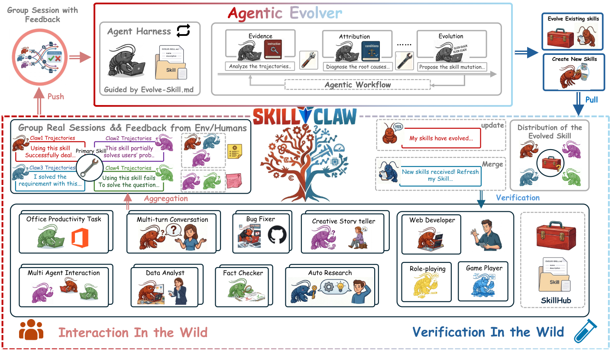
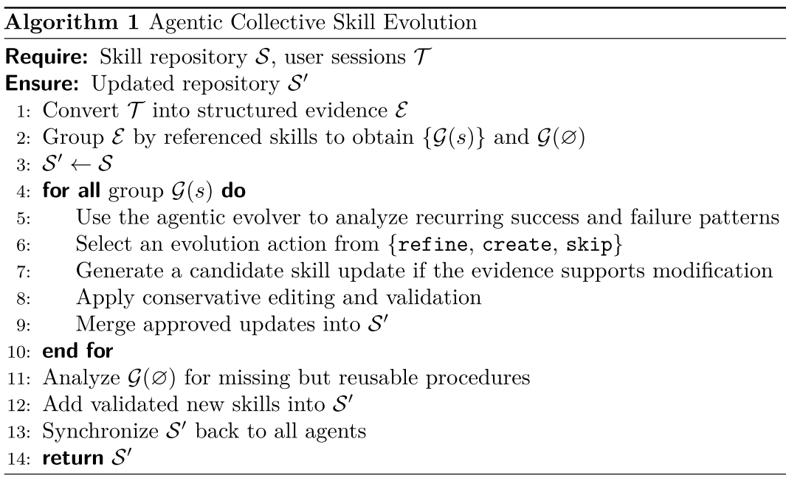
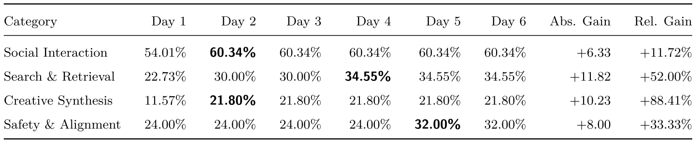
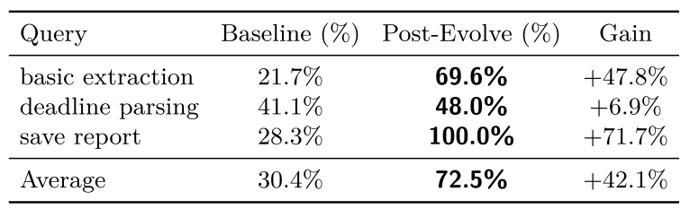

SkillClaw 论文阅读笔记
Introduction
LLM Agent (例如 OpenClaw)，依赖可复用的 skills 来完成复杂任务。但这些 skills 在部署后通常是静态的，因此相似的工作流、工具调用模式和失败模式会在不同用户之间被反复“重新发现”，系统无法从经验中持续改进。虽然不同用户的交互可以提供互补信号，说明一个 skill 在什么情况下有效或失败，但现有系统缺少一种机制，能够把这些异质经验转化为可靠的 skill 更新。
现有方法大致有两类：
-
memory-based methods，即把过去轨迹存起来，后续检索使用。但这类记忆往往绑定具体实例，很难变成通用技能；
-
skill-based methods，即把经验压缩成结构化技能。但很多方法把生成后的 skill library 当成静态资源，缺少持续演化机制。
为此，阿里的 DreamX 团队提出 SkillClaw：一个面向多用户 Agent 生态的集体技能进化框架。它把跨用户、跨时间积累的交互轨迹作为改进 skills 的主要信号。SkillClaw 持续聚合使用过程中产生的轨迹，并交给一个 autonomous evolver 处理。该 evolver 识别反复出现的行为模式，并将其转化为 skill set 的更新：要么细化已有 skill，要么扩展新能力。更新后的 skills 被维护在共享仓库中，并同步给所有用户，使一个上下文中发现的改进可以系统级传播，而用户无需额外操作，大致的overview如下图所示。

SkillClaw Method
首先定义共享 skill set 为：，其中， 表示共享技能集合， 是第 个可复用 procedural artifact，即可复用的过程型技能。
每个用户交互产生一个 session trajectory：，它记录完整交互循环，包括用户 prompt、Agent 动作、环境或用户反馈，以及最终回复。
跨用户收集到的轨迹集合为：。
SkillClaw 的目标是基于当前 skill set 和多用户轨迹集合，得到更新后的 skill set：。
1.From Isolated Sessions to Shared Evidence (从孤立会话到共享证据)
多用户 skill evolution 需要把孤立、异质的交互会话转化成支持跨用户推理的形式。在SkillClaw中，这分两步完成：
- 结构化每个 session，以保留因果信息；
- 把这些结构化 session 聚合成共享证据库。
其系统级闭环为：。
在推理时，Agent 的 prompt 中会包含可用 skill catalogue，Agent 可以根据当前任务动态选择并加载相关 skills。用户之间不需要直接交互，也不需要协调；集体改进完全来自共享 skill evolution。
每个 session 不只是普通对话，而是完整因果链：。
SkillClaw 记录这些信息，是因为大多数 skill-level failure 是程序性失败。例如参数格式错误、缺少验证步骤、工具调用顺序错误，这些问题通常不会直接体现在最终回答中，只能从中间 action-feedback trace 中诊断出来。
此外，每个 session 还会提取轻量 metadata，包括：
- 使用了哪些 skills；
- 是否发生工具错误；
- 粗粒度质量估计。
然后，系统按照被引用的 skill 对 session 分组。对每个 skill s，收集所有调用过它的 session：
其中， 表示第 个 session 中引用过的 skill 集合，没有使用任何 skill 的 session 被放入 。
2.Agentic Skill Evolution (由 Agentic Evolver 执行技能进化)
SkillClaw 的核心是一个 agentic evolver，它通过开放式推理更新共享 skill repository。该 evolver 是一个 LLM agent，配有结构化 harness。Harness 提供分组后的 session evidence、当前 skill definitions，以及允许的 evolution actions，但不限制 evolver 的具体推理方式。
给定一个 skill 及其对应 session group ，evolver 同时检查成功和失败执行，并在三种动作中选择一种：
- Refine： 根据失败模式修正已有 skill，提高鲁棒性；
- Create： 当 暴露出已有 skill 未覆盖的可复用子过程时，新建 skill；
- Skip： 当证据不足以支撑修改时，不改变 skill。
对于 ，evolver 专注于发现缺失但可复用的过程。只有当观察到的模式足够具体、可教学、且可能复现时，才创建新 skill。
无论选择哪种动作，evolver 都会联合分析成功和失败 session。成功 session 定义 skill 的 invariant，即已经有效、不能被破坏的部分；失败 session 定义需要修正的 target behavior。这样可以避免一个常见问题：修复一个错误，却破坏原来有效的流程。
3.Skill Synchronization and the Evolution Loop (技能同步与闭环部署)
进化后，候选 skill update 不会立即写回共享仓库，而是先进行验证。验证通常在夜间执行 (白天收集、夜间进化，比较贴合人类用户的使用习惯)，并利用空闲用户环境，以确保评估条件接近真实部署。
对于一个原 skill 和候选更新 s^'，系统会从当天交互数据中选择相关任务，在相同环境、完整工具链、多步交互和中间反馈条件下分别执行两者。然后模型比较 和 s^' 的结果，判断依据包括整体任务成功率和执行稳定性。如果候选更新表现更好，则标记为 Accept；否则为 Reject。被接受的更新会合并到共享仓库，并同步给所有 Agent，供第二天使用。被拒绝的更新只保留为候选记录，不部署。
整个闭环为：。
4.Algorithm Orchestration
算法流程大致如下：

- 将用户 sessions 转换成结构化证据 ；
- 根据引用的 skills 分组，得到 和 ；
- 初始化更新后仓库
- 对每个 skill group ：
- 使用 agentic evolver 分析反复出现的成功和失败模式；
- 从
{refine, create, skip}中选择进化动作； - 若证据支持修改，则生成候选 skill update；
- 执行保守编辑和验证；
- 将通过验证的更新合并到
- 分析 ，寻找缺失但可复用的过程；
- 将通过验证的新 skills 加入 ；
- 将 同步给所有 Agent；
- 返回 。
实验
实验在WildClawBench上进行，模拟一个连续的 day-night skill evolution deployment。共运行 6 天，也就是 6 轮。每天分为两个阶段：
- 白天：用户与部署的 OpenClaw Agents 交互，完成 WildClawBench 任务，并产生 session trajectories；
- 夜间：系统处理当天收集到的交互数据，生成候选 skill updates，并通过 validator 过滤。只有通过验证的 skills 会加入共享部署池，供第二天使用。
实验中有 8 个并发用户。所有执行、skill evolution 和验证过程都由 Qwen3-Max 驱动。Day 1 使用初始 skill set，作为 baseline。后续轮次中，只有在交互中被触发且表现出改进潜力的 skills 会被考虑更新。

实验结果如上表所示。
-
Social Interaction 在 Day 2 提升最快，从 54.01% 到 60.34%，之后保持稳定。这说明该类别存在一个覆盖面很广的关键 workflow bottleneck，一旦 skill 被修正，性能马上提升。
-
Search & Retrieval 是分阶段提升：先从 22.73% 到 30.00%，再到 34.55%。这说明检索任务不是一个 skill 更新就能解决，而是先修复输入验证、文件可访问性等低层可靠性问题，再逐渐发展到约束感知检索规划。
-
Creative Synthesis 从 11.57% 跳到 21.80%，随后平台期。作者认为瓶颈不在创意内容生成本身，而在环境设置、文件处理、工作目录配置、多模态 pipeline 等基础执行问题。
-
Safety & Alignment 提升较晚，从 24.00% 到 32.00%。改进主要围绕真实环境中的执行可靠性，例如 Git fallback、目录克隆协议、非交互环境安全执行等。这类更新不一定马上体现为“更聪明”，但能减少边界失败，提高长期稳定性。
整体来看，SkillClaw 的收益更多来自程序性错误修复和执行流程稳定化，而不是让模型本身获得新的推理能力。
此外，进一步实验显示，不同类别的技能进化轨迹不同，说明 SkillClaw 学到的不是一堆抽象原则，而是不同任务类别下的瓶颈修复路径 (更像 SOP，而不是普通记忆条目)。
还有一个小实验比较有意思，因为主实验里，一个任务失败可能同时因为多个环节，很难判断 skill evolution 具体修好了哪一环。而这个实验把问题拆成三个更明确的测试，如果只测试某一个失败点，进化后的 skill 是否能直接修复它？
- basic extraction： 能否按稳定流程抽取基础信息？
- deadline parsing： 能否理解和解析 deadline 这类细粒度语义？
- save report： 能否把结果按正确路径、格式保存？
实验结果如下表所示：

可以看出：
- 对于 save report 这类环境/路径/格式相关的程序性失败，skill evolution 效果极强；
- 对于 basic extraction 这类可归纳执行模式的任务，也很有效；
- 对于 deadline parsing 这类更依赖细粒度语义理解和推理的任务，提升较小。
SkillClaw 似乎更擅长修复流程知识缺失或执行规范错误，不一定显著提升模型的深层语义推理能力。
其他实验和细节参考原文。
参考资料